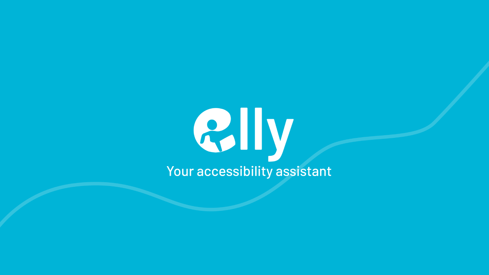
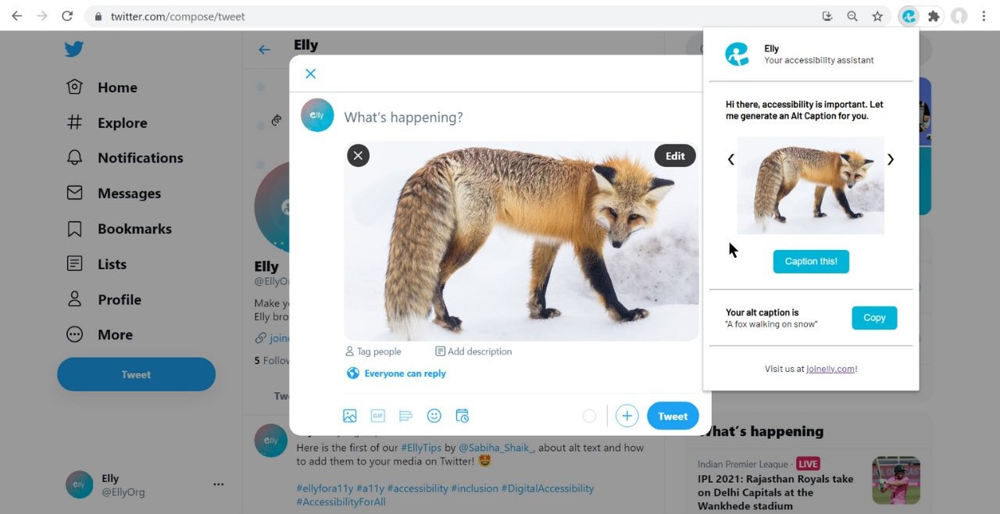

Back to Projects

Elly is a browser extension developed by a global all-female team of four Microsoft Learn Student Ambassadors, that generates alt text for images and acts as an accessibility checker for draft Tweets. Currently, a beta version has been published to the Chrome Web Store and Edge Add-ons pages.

As one of the team's frontend developers, I translated our UI designer's mockup in Figma to HTML and CSS.
Additionally, several features I developed in JavaScript include: